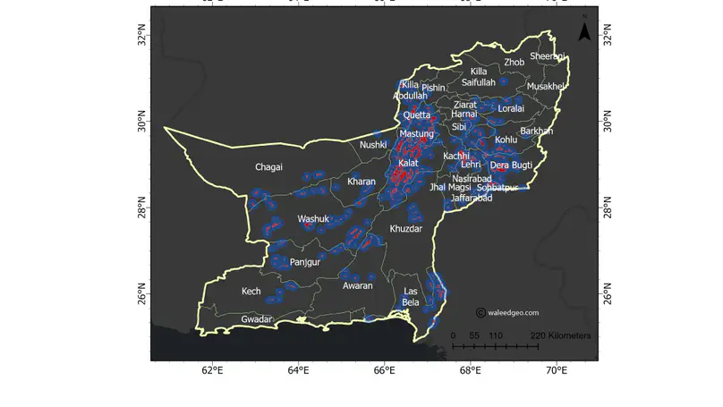

Disaster Management
Last updated on 20 May 2023

Disaster management involves the preparation, mitigation, and response to natural and man-made hazards. Effective disaster management can save lives and minimize the long-term impact of disasters.
Utilizing modern technologies such as Geographic Information Systems (GIS) and Artificial Intelligence, disaster management strategies can be optimized for better prediction, planning, and recovery.
Note: I am actively working in this domain and will update this section as I publish more work.
Some of below works are currently under review...
- On the Emergence of Cloud-based Platforms for Disaster Risk Assessment: A Scientometric review of Google Earth Engine Applications (Review Paper, submitted in International Journal of Disaster Risk Reduction)
- Comparative analysis of flood susceptibility mapping using various open-source machine learning models (Research Paper, undergoing)
- National Scale Flood Susceptibility Mapping using state-of-the-art machine learning models (Research Paper, undergoing)


Muhammad Naveed
GIS Analyst |Geospatial Data Science
I am a GIS & Remote Sensing Expert at Tech-GIS, specializing in geospatial data analytics techniques, cloud computing, and artificial intelligence for Climate change,Disaster Management, especially for flood mapping. I am also a geospatial Data analysis in At Fiverr Expert Earth Engine.